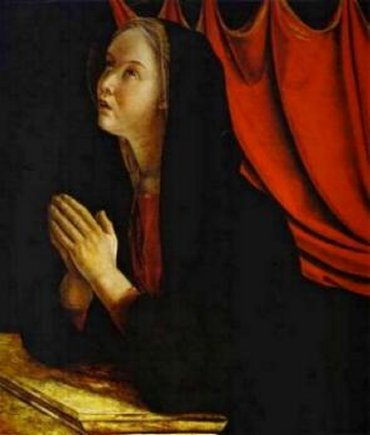
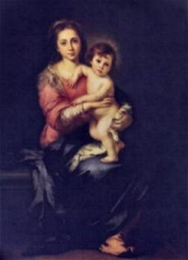
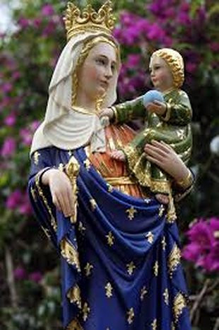
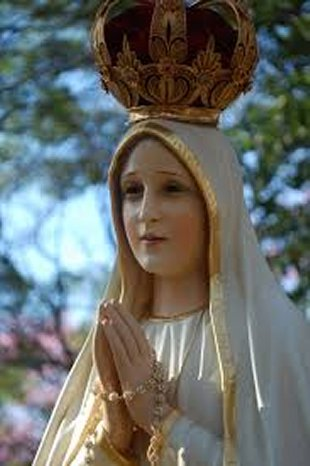

ÚLTIMAS PALAVRAS
NOSSA SENHORA, querida RAINHA do Céu e da Terra, queremos LHE fazer um grande pedido, pois DEUS VOS elegeu tão rica em virtudes e tão maternal em graças, para socorrer com a VOSSA imensa misericórdia, os pecadores e miseráveis do mundo que vivemos. Por isso querida MÃE, nós fervorosamente VOS suplicamos, olhai para o nosso BRASIL, um país tão bonito como a SENHORA bem conhece, com um clima tão especial e tão agradável, mas com um povo não preparado para viver em comunidade honesta, produtiva, competente e sobretudo, fiel as leis, ao direito, a justiça e ao amor a DEUS. Nós VOS suplicamos MÃE Querida, tenha misericórdia dos brasileiros e derramai em forma de labaredas de graças, a exemplo de como fez o DIVINO ESPÍRITO SANTO no passado, e derrame torrenciais, preciosas e eficazes graças sobre todos nós, amadurecendo o nosso espírito em sabedoria, inteligência e responsabilidade, abrindo a inteligência e escancarando as portas do coração do povo, para aprendermos a cultivar a maravilhosa virtude da honestidade, da honra, da generosidade, do perfeito seguimento aos sagrados princípios das leis, e da dignidade. Fazei-nos compreender, MÃE QUERIDA e AMADA, que esta é uma vida transitória, é uma simples passagem para o caminho que conduzirá todos nós a felicidade eterna, numa viagem que não levaremos nada, nem o nosso próprio corpo. Nossa alma subirá sozinha e se apresentará sem qualquer acessório perante o Tribunal Divino. Então não se justificam esta infinidade de escândalos, inclusive roubos com cifras impressionantes e astronômicas, que bem revelam uma ganância doentia e satânica! Porque tudo isto MÃE? Que grau de maldade, de degradação e violência tão elevado é este, que cegou a maioria dos nossos administradores públicos, de organizações particulares, e também os representantes do próprio povo, que verdadeiramente se compactuaram com o demônio e seus asseclas, transformando os acontecimentos num terrível e abominável vendaval vergonhoso, detestável e merecedor das mais severas punições? Por isso, MÃE QUERIDA, de joelhos aqui diante da imagem da SENHORA nós suplicamos o VOSSO poderoso auxilio e a VOSSA compaixão, implorando a VOSSA infinita Misericórdia a fim de interceder junto ao VOSSO DIVINO FILHO JESUS e ao PAI ETERNO CRIADOR, para converter o coração dos brasileiros, principalmente daqueles que mais necessitam, porque verdadeiramente eles estão muito e muito distantes do caminho que DEUS projetou para cada um dos seus filhos.
UMA HOMENAGEM A NOSSA SENHORA
Se quer ouvir uma linda música, clique na Nota Musical abaixo:
CONSAGRAÇÃO A NOSSA SENHORA

FOTOGRAFIAS





CONVITE
Este Site foi construído pelo Apostolado dos Sagrados Corações. Clique aqui ou no endereço abaixo para visitar o nosso PORTAL. Nele encontrará uma apreciável quantidade de Sites, todos eles fundamentados na Sagrada Escritura, na Tradição Cristã, nas Manifestações Sobrenaturais e na Vida e Obra dos Santos. São Sites sobre o CRIADOR, o ESPÍRITO SANTO, JESUS DE NAZARÉ, sobre NOSSA SENHORA, os ANJOS DO SENHOR e Sites que descrevem a trajetória existencial de diversos SANTOS.
http://www.apostoladosagradoscoracoes.com/
Desejando se comunicar conosco, por gentileza, utilize o E-mail abaixo:
FIRMAS QUE DIVULGAM
O SITE